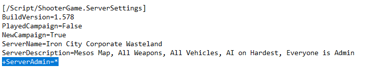
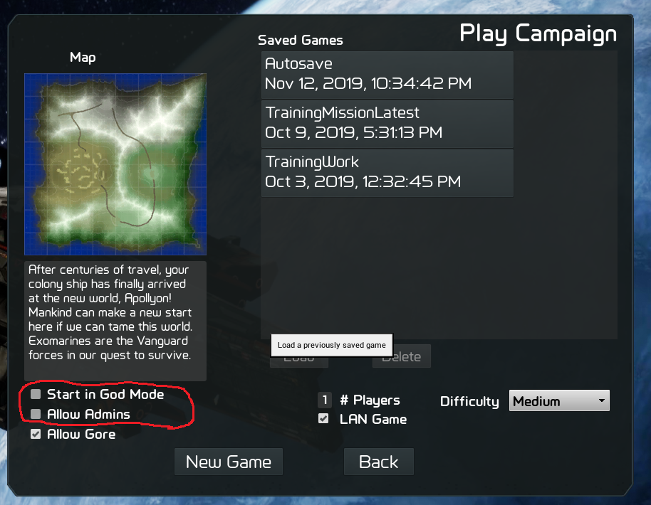
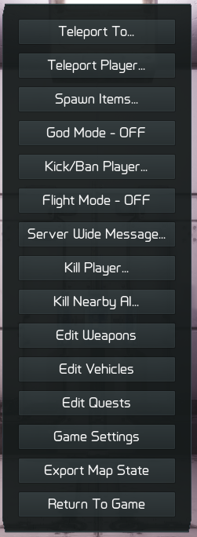

The Gamemaster role in GearStorm allows the player to take control of the game in almost every way. As Gamemaster you can teleport, fly, build unlimited things, spawn anything, ban people, kick people, teleport people to you, change the damage, range, and rate of fire of weapons, change the performance, damage, and armor of vehilces, and change the world time, weather, day cycle, etc.
Becoming Gamemaster/h3>
Here are the ways to be a Gamemaster in a GearStorm game:
1. In the game.ini file, under the [/Script/ShooterGame.ServerSettings] section, set the "+ServerAdmin=" value to the steam ID number of your admins. Add a new "+ServerAdmin=" value for each Gamemaster you want to add or use the "*" value to let anyone be Gamemaster (ie: "+ServerAdmin=*")

2. When hosting the game or starting a campaign, check the "Allow Gamemasters" check box and to start in Gamemaster mode already, check the "Start in Gamemaster Mode" checkbox.

Gamemastering
To perform any Gamemaster function in GearStorm, you need to use the Gamemaster interface accessed by pressing "backspace" (default mapping)
Gamemaster Interface:
